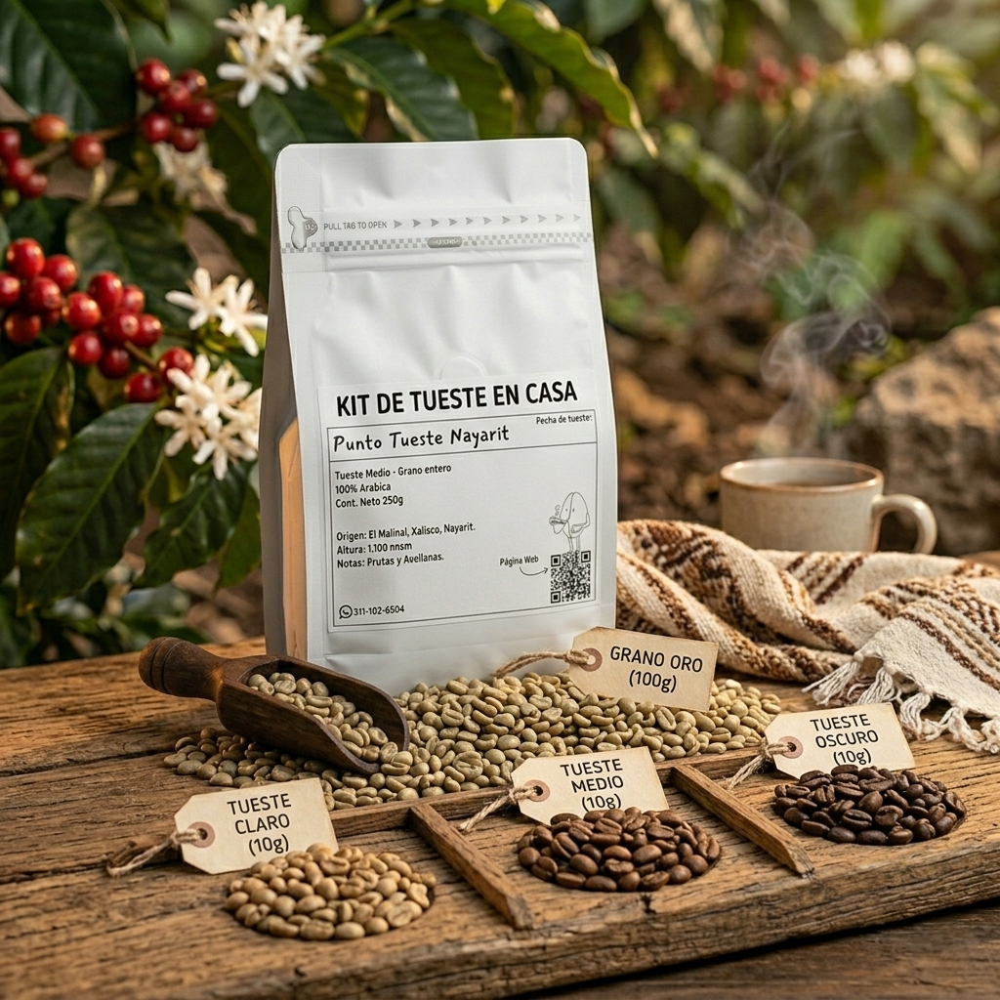
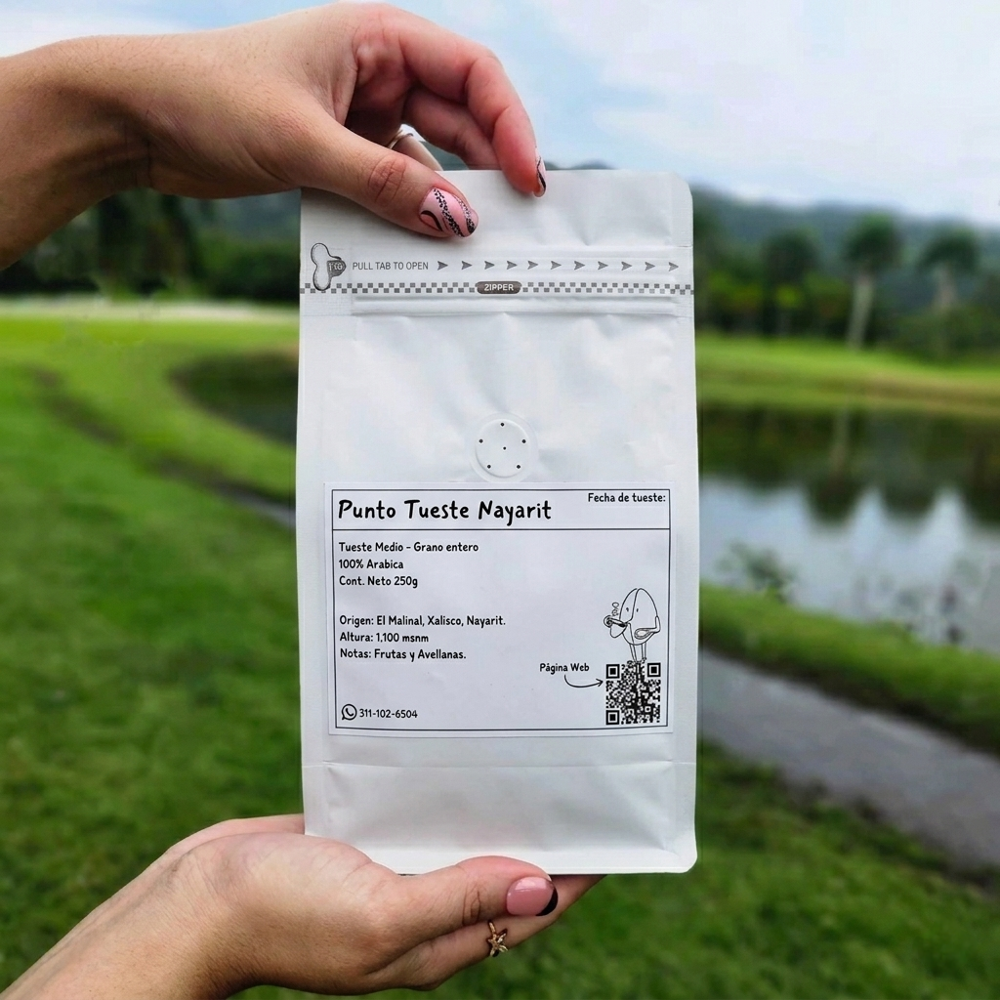

Tostaduría artesanal en Tepic. Llevamos el perfilado técnico a tu taza, resaltando las notas únicas de las tierras nayaritas.
CREAR MI PERFIL DE TUESTELa forma más pura de entender el café es transformándolo tú mismo. Este kit contiene lo necesario para tu primer tueste artesanal.


250G / MEDIO / GRANO
Si consumes más de 5 kilos al mes, accede a nuestra tarifa de mayoreo. Mejora tu margen comprando directo de tostaduría.